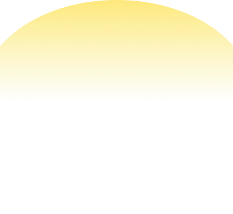
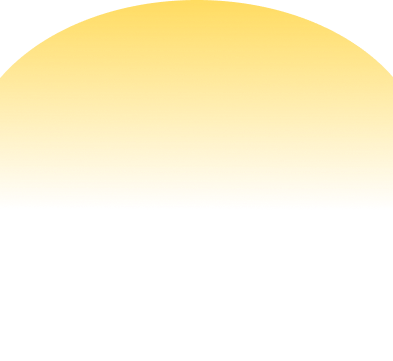
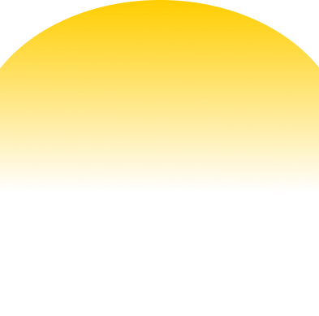
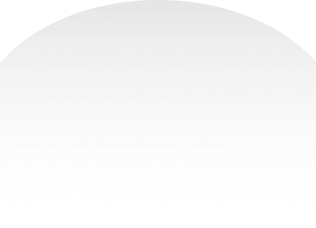

0/0
一、关于我的与众不同
1. 自我认知
其实，在初一的时候，我就已经知道了我喜欢男生。那年我十二岁，那时候我就意识到了自己跟别人的关注点不一样。但我没有害怕这件事，只是会想为什么会这样？我会在放学的时候会去网吧在网上寻找答案“男生会喜欢男生吗？”“男生为什么会喜欢男生？”哦，原来男生真的会喜欢男生，我也就知道了 gay，同性恋和“同志”这些词。但那会在初中的时候，我也只是说，哦，知道有这么一回事儿，我跟其他男孩子们喜欢的人不一样。但那时候，我还没有跟身边的同学和朋友讲过它。
2. 自我接纳
我是在上了高中之后，才开始慢慢跟身边的朋友和同学说起这件事，大家的反应也没有我想象中那么夸张或抗拒。感觉也就是个很平常的事情，当然也会说好奇说“你喜欢男生啊”“那你喜欢谁啊”。其实看到这里，我想你们会有疑问“你是不是搞错了，小孩子哪懂什么是喜欢，什么是不喜欢？”“你都没交过女朋友，怎么知道自己不喜欢女生？”
当时我思考过，和朋友也讨论过：“我还有没有可能会喜欢女生？我要不要试一下？”。后来，在一次考试后我认识了一个女生，我们聊天很愉快，还互相加了 QQ 账号。在接下来的几天里我们经常聊天我想，这也许是一次机会？后来的一个周末，我约她出来去河边散步。我跟她表白了，我们也在一起了。后面的几个月里，我学着其他男生的方法。每天陪她吃饭，陪她在操场散步，我们也牵手了。我依旧没有谈恋爱的感觉，没有想亲她的冲动。甚至走在路上也还是会被好看的男生吸引。后来，我不想继续耽误这个女孩子，我们分手了。自此，我明白了，我不会喜欢女生。其实，这个问题，爸，你也可以想象一下，你也没交过男朋友，怎么知道不不喜欢男生？因为你一开始喜欢人就是女生，所以你也从来没有想过这个问题，自然而然就知道你喜欢女生。那对于我来说，也是一样的。
还有一点，我相信你们也都还有印象，关于我是左撇子这件事。小时候吃饭的时候你们总是想让我改用右手拿筷子吃饭，我记得，当时那段时间还导致我说话会有口吃（这个也是后来大学我看到一篇研究报告才知道的）。后来，实在是改不过来就不改了，我说话也不口吃了。其实，我喜欢男生这件事，和我是左撇子一样，都是随着基因天生而来的。只是跟其他大多数的右撇子和喜欢女生的男生不一样罢了。
3. 自我救赎
我是在高二的时候，经历了一次失败的告白，和一次意想不到的“出柜”之后才开始思考更多的以后的事情。那一次，我跟我同桌男生表白了，当然最后失败了。也是在那段时间里，我情绪都不太好，状态也不好，被班主任何老师看出来了，叫我去办公室谈话了。谈话过程中，她知道了我有喜欢的人，然后告白失败了。她问我喜欢的是谁？猜了很多名字。我最后跟她说了，我喜欢的人是我同桌。我不知道，我怎么就把这件事说出来了，我也不知道，我将面临的是什么。这么多年了，何老师说的原话我早已记不清楚了。但我记得，从那之后，我没有再为眼前这些事情耽误自己的学习。因为我相信，我能够去一个更大的舞台，在一个更好的平台去认识更优秀的人们。我能走出这个县城，走出四川，去见一个更大的世界。虽然我从高一进班的时候就说我要去北京，我要考中央美术学院。但从来没有那么渴望过，或者想为自己拼尽全力去努力。
现在想来，我很庆幸，我能在青春的年华，在最美的少年时代勇敢做我自己，去告诉身边的朋友和同学，真实的我是什么样子。我也很感谢TA们，让我在这个勇敢做自己的路上没有受到什么伤害，或者沉重的打击，让我封闭自己。说到封闭，上面出现了一个词儿“出柜”，你们也许不太清楚这个概念。它是指的同性恋者保守着自己的秘密，就像躲藏在一个柜子里，透不过气，不敢出声，有一天他把秘密告诉了外人，就像打开了这个柜子，所以叫“出柜”。还有多少人，只是因为性取向不同，就把自己束缚在这个无形的“柜子”中，而今天，我也将向爸妈，爷爷婆婆打开我人生中最后一个柜子。”
二、关于我的观点和经历
1. 关于“做自己”
其实这么多年，我除了在你们面前，我一直都在做我自己。我的高中同学，班主任，大学同学，大学老师，我在爱奇艺实习的同事，研究生同学，我研究生的教授，老师们，TA们都知道我是Gay，我喜欢男生，我们可以没有顾虑的去谈论这些话题。我跟你们说这些，不是为了想让你们感到失望，我跟最亲近的家人都瞒着秘密。而是说在这之前，我不知道该怎么和你们沟通这件事，我也想有这么一个契机，让我可以好好来跟你们讲这件事。那么现在，我做到了，我正在把握住这个机会。
这 15 年来我过得很好，时常能感受到生活的幸福与快乐。我很庆幸从艺术高中，美术学院，艺术大学这一路走来，我都能生活在一个包容，和谐的环境里。我的性格也还是一样的开朗，阳光，乐观，积极，自信。虽然Gay这个身份不是我选的，但我也有在精彩的过我想要的生活。我想告诉你们，性倾向只是我人生很小的一部分。我还有很多其他的事情，我的事业啊，我的日常生活啊，我的兴趣爱好啊。我一直都在以这样积极，阳光的态度享受我的的生活。所以你们也不要为这件事感到失望，难受，或者为我担心。我对我的生活，我的未来都有计划，这一点我会通过自己的努力让你们放心的。
2. 关于“性爱”
听到同性恋或者 Gay，有人就会想到艾滋病，认为同性恋者的私生活脏、乱、差，在性爱方面纵欲无度，一棍子打死一群人。但是我想跟你们说的是，艾滋病它并不是某个群体的问题，它是全球性的健康问题，任何人都有感染的风险。是，我们要首先明确艾滋病会通过性传播，但它不会凭空产生，只要和健康的伴侣，彼此忠诚，提前检测，做好防护，无论是喜欢同性，还是异性，都不会感染。过去人们对同性恋不了解，媒体为了博人眼球，也多用窥视的角度，负面报道很多。那我们试想一下，中国人口有 5% 的同性恋，也就是说有几千万同性恋。那什么样的人，什么样的事没有呢？异性恋有的，同性恋也有，那异性恋的淫乱和犯罪岂不是更多，那异性恋不是更乱？所以，关键还是在于每个人自身。对于我来说，我只会和自己相爱的人有性爱，安全的性爱。而且，我也充分了解这方面的知识请你们放心吧。
3. 关于“情感”
说到情感，我相信你们已经猜出来了。是的，张家荣和我曾经交往了近七年。我们是大一军训之后在一起的，15 年 10 月份吧。我也是从大一下学期的暑假开始以“同学”“好朋友”的身份邀请他过来成都玩。去年暑假回家那次，爸爸妈妈你们，还有爷爷婆婆都还是会经常跟我提到他，虽然我们已经分手。我希望你们没有被我吓到，之前在你们印象里，我还是一个从来没有谈过恋爱的孩子。现在突然变出一段近七年的恋爱史。虽然我跟他分手了，但并不影响我们曾经一起拥有的美好的回忆。也不影响，这多年，爸妈，爷爷婆婆你们看着我们两个人的成长。你们也都看的到，我们也都只是普普通通的大学生，跟其他人的生活没有什么区别。Gay 也可以有普普通通的，稳定的恋爱关系。我现在在德国，在柏林也过着幸福快乐的生活，有着一段已经一年多的稳定的感情。我去年回国的时候跟你提过他，他已经在德国工作了，工程师。他虽然是江苏人，但他妈妈也是四川人，会说四川话。我们两个各方面都合得来，两个人的小日子也是过得舒舒服服的。我们都有在德国拿永居，长期生活的打算，未来目标算是一致，很好。
4. 关于“孝顺”
爷爷婆婆，爸，妈，你们是我最爱的人，是我在这个世界上对我最重要的人，不管我是同性恋，还是异性恋，这一点都不会改变。虽然从上大学之后，我不能够时时刻刻陪伴在你们身边，但我心里也是一直对你们有牵挂的。我们现在这样的相互关爱，彼此牵挂，又相对独立，彼此尊重的亲子关系，我真的很喜欢。我不希望你们在家乡，在远方，还在为我的这些事情操心，这样你也会累，心里不舒服，我也会有压力。婆婆就是最爱操心别人的事情，想这些，想那些的。婆婆，不要想那么多了，所有事情都是可以解决的。我最大的希望就是，爸，妈，你们安排好你们的生活和爷爷婆婆的生活。我们经常保持视频聊天，看到你们开心、健康愉快的生活，才是对我最大的鼓励和支持。这样我在追求自己梦想的路上，也能没有后顾之忧，继续勇往直前，好好奋斗和拼搏，为爷爷婆婆，还有你们提供一个更好的生活条件。大方向想好了，小安排也可以提上日程。我也想好了，等毕业后工作稳定了，每年都可以请20天的年假回来陪爷爷婆婆还有爸妈。这样每年我们都可以带爷爷婆婆出去旅游，出来享受生活，一家人开开心心出来耍。想想都觉得很激动，很幸福了。
三、关于你们的担心与解释
1. 关于“是不是丢人”
爸，妈，爷爷婆婆，我从小到大，好好学习，高考考上我梦想的学校，研究生来到德国继续学习，毕业之后我也在自食其力，好好工作与生活。没有做影响他人，影响社会的事，没有做违法乱纪的事情，那么，这有什么好丢人的呢？就算是以后面对别人的偏见，质疑，误会时，我们自己一家人幸福快乐的生活也是击碎它们最好的武器。况且，身边的人，大家都是从小看着我长大的，他们也了解，一直来说，我的学习，我的性格，我的为人都是很优秀的。更多的时候，别人根本没有我们所想象的那样歧视。只是会想到，哦，这条路以后可能不太好走，就是这一点点的担心，毕竟每个人都在过自己的生活，谁在乎别人那么多，是吧？当然，我们在这个时候，还是要及时的给别人普及知识，知道同性恋不是罪，不是病，只是少数而已。中国在 1997 年，我出生那年，已经将同性恋去罪化，并在 2001 年将同性恋去病化，即在医学上，同性恋不再被视为心理疾病。而且现在世界上已经有 30 多个国家和地区同性婚姻合法化。新的时代，社会在进步，大家也都越来越希望过自己真实、健康、幸福和自由的生活。跟他们说通了，该交往的还是跟平常一样来往。那说不通的，那就不来往就好了嘛。你过你的日子，我过我的日子，你管我儿子，孙子什么呢？我们过好了，就是家里过好了。
2. 关于“结婚”
在这一点上我倒是没有瞒过你们。我一直都想的是，30-35 岁的时候再考虑谈婚论嫁的事情。年轻的时候还有太多的事情要做了，想做了。而且，我也不认为，婚姻是对一段恋情的最后保障。虽然一段恋情可能会分手，但结婚也照样是可能会离婚的。最重要的，其实还是两个人感情稳定，生活稳定。幸福快乐肯定是最重要的。哦对，我前面说的这些，结婚对象肯定都是男的，这个希望你们不要误会。虽然我不知道这辈子在中国“结婚”跟我是否有缘。但我现在在欧洲，在德国，在这一个性少数群体能够结婚的国家工作和生活，所以在国外结婚这件事，你们不用太担心。包括我如果以后想结婚了，也肯定是我做过了深思熟虑的打算了，当然也会跟你们说。
既然都提到“结婚”了，那免不了说到孩子。但这个话题，对我来说，也还是太早了。在三十五岁之前还不会考虑这个问题。我在读大学的时候养过一条金毛，当然，从来没有跟你们说过。我也是在养狗的那一年里，真切的体会到什么是责任感。狗孩子生病了要治，一天三顿饭要准备，零食要准备，一天两到三次的定期遛狗。后面因为不在校外住了，我也将狗狗通过宠物医院找到一个好人家领养了。虽然养狗和养小孩不能相比，但它们都是要去好好善待一个新生命呀，需要你付出你的时间，精力，有责任的去养育它们。我也是通过这次的经历，体会到新生命的重要性、严肃性。如果在我自己的心态都还是一个孩子的时候，我还不想承担这份责任。那你们会说了“还考虑什么，两个男人怎么生孩子了”。爸，妈，爷爷婆婆，如果说，未来我和我的伴侣想陪伴一个新生命长大，我们也可以考虑领养或者其他的途径，未来关于这一块的系统和法律法规，也会更加完善和健全。就像爸妈和爷爷婆婆养育我一样，陪伴新生命长大的过程，本身就应该是享受的，我也希望能看着一个新生命慢慢长大。
你可能又想问了“那领养的孩子靠得住吗？领养有什么意义？那不过是自欺欺人”。爸，妈，爷爷婆婆，抚养新生命，本身就不是为了靠得住呀。外婆的几个孩子，除了妈妈和舅舅，大姨和小姨也是外婆在外面抱回来的弃婴，外婆当时抱她们回来，难道是想以后她们靠得住吗？不是的呀。看着新生命在慢慢长大，本身就是意义哇。孩子是独立的个体，我也是独立的个体。就像你们一直以来陪伴我健康成长，也充分尊重我，我会以你们为模范，尽我所能，给孩子适度的爱。但我也不会把自己的希望和期待寄托在孩子身上。
3. 关于“养老”
爸，妈，爷爷婆婆，不知道我猜测的对不对，看了上面那么长的一段话，我想你们应该是能够理解我的，但你们一定还是会担心我的未来、我的生活、特别是担心万一未来我没有孩子的情况下，我老了怎么办。我也想让你们放心，关于养老问题，我也都仔细地考虑过。经济上，趁着还年轻，好好工作赚钱，搞一搞副业和理财，攒够足够的积蓄，最后再有一套自己的房子。我从不来梅回柏林这三年来，我没有问屋头要过一次钱，所有的经济来源都是通过我自己的努力做到的。我相信，通过这件事你们可以相信我有照顾好自己的能力。在感情上，未来，我也会和我真心相爱的人，稳定下来，互相扶持，慢慢到老，彼此有任何需要时，都可以互相照应。而且现在时代发展那么快，未来的养老，还有更多的选择。试想一下，三十年前，我们能想到每个人都有一部手机吗？社会发展的速度不是我们能想象的。三十年以后，我也快六十岁了，那个时候社会应该早就智能化了。现在都有机器人做家务、送外卖、送快递等，未来科技肯定也可以解决很多问题。最后想说的，跟同性恋还是异性恋没有什么关系，最重要的还是，要时刻保持一个好心态，好好锻炼身体，身体健康！这一点同样要送给你们！
4. 关于“你们怎么看我”
最后一个话题了，也是最重要的一个。出柜这件事，对于我个人来说，已经有了十五年的铺垫，和这十二年来养成的良好的自我认同观。我对此一点也不紧张，也不害怕把这件事情告诉你们，我也做好了面对一切的充足准备。但我最纠结的，还是，你们的感受，我希望你们在得知这件事情之后，爸，妈，爷爷婆婆还能像以前一样爱我，跟我相处。我想着每年年假回来，我们一起过年，一起吃饭，一起看电视，一起出去耍，一家人热热闹闹。爸，妈，爷爷婆婆，我还是那个一直爱你们的小孩，我希望你们也是。
其实写完上面的文字，我反而感觉整个人轻松了很多，本质上性取向不是我自己选择的结果，是我人生中存在的不可改变的因素。我想起前段时间跟我在柏林的好朋友开玩笑说的话，小时候是个左撇子，长大了是同志，高考的时候是艺考生，大学读的是美术学院，研究生还来了中国人人少的德国和艺术大学读书。仿佛我这一生走来，都是在走一条少有人在走的路，但既然走了，那就也要走出我自己的精彩，只要足够勇敢，我就能幸福！
爸，妈，爷爷婆婆，希望你们看到这里也变得轻松了，其实也就这么个事儿，让我写的还有点儿复杂了。但你们一定要相信，我已经足够强大，可以保证自己幸福、快乐地生活。爸，妈，爷爷婆婆，我为有你们，一直以来爱我，护我，理解我，尊重我的家人而骄傲！
爱你们的儿子，孙子
2024年1月9日
给爷爷婆婆，爸爸妈妈的一信封
我最爱的爷爷婆婆，爸爸妈妈：
我曾幻想过无数次，我会如何跟你们讲述这个秘密。我很庆幸，我可以在大学用三年的时间去更好的了解和研究这件秘密，并且最后将它在我的硕士毕业设计中跟你们展现出来。
我想让你们了解真实的我，一个从小到大一直隐藏着一个秘密的真实的我。我们可以好好聊一聊关于我对自我认知、我的观点和经历、我的想法和打算以及你们的担心和解释，希望看完这封信，你们还像以前一样爱我，也不要为我担心太多。



